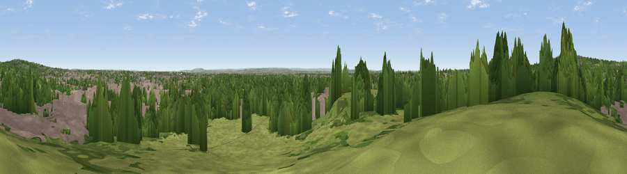

Primrose Hill
#31707 in England · top 15% of its area beats it · near Camden TownThe view, rendered

A 360° render of this exact spot computed from the terrain model, tree cover and land cover — summer colours, afternoon light, calibrated against photographs of famous viewpoints. Real trees, hedges and buildings will differ in detail.
The panorama
Grey silhouette: terrain skyline in each direction (720 bearings, Earth curvature and refraction included). Dashed green: skyline with trees (+15 m) and buildings (+8 m) as obstacles. Blue strip: how far the ground is visible on each bearing.
Where the view opens
Wedge length = distance to the farthest visible ground on that bearing (vegetation-aware). Rings at 10, 25 and 50 km.
What fills the view
46% built-up · 38% woodland · 16% grassland
Angular shares of the visible panorama (visual magnitude), not map area. Landscape diversity 0.45 (0–1 Shannon).
Key numbers
More beautiful places nearby
The staircase of upgrades: each row has a higher view potential than everything closer. Driving times are estimates from straight-line distance, calibrated against real road routing — check an actual route before setting out.
| Place | Direction | Drive | Score |
|---|---|---|---|
| Parliament Hill | N · 2 km | ~6 min | 48.4 |
| Viewpoint near East Finchley | NNE · 4 km | ~9 min | 51.0 |
| Viewpoint near Wood Green | NNE · 6 km | ~14 min | 51.8 |
| Harrow on the Hill | WNW · 13 km | ~24 min | 60.7 |
| Viewpoint near Chaldon | S · 30 km | ~47 min | 66.7 |
| Viewpoint near Caterham Valley | S · 31 km | ~48 min | 68.0 |
| Box Hill | SSW · 33 km | ~51 min | 70.4 |
| Viewpoint near Box Hill Village | SSW · 33 km | ~51 min | 71.0 |
51.53953, -0.16069 · source: osm peak · position refined by local search. Computed location — check access rights before visiting.